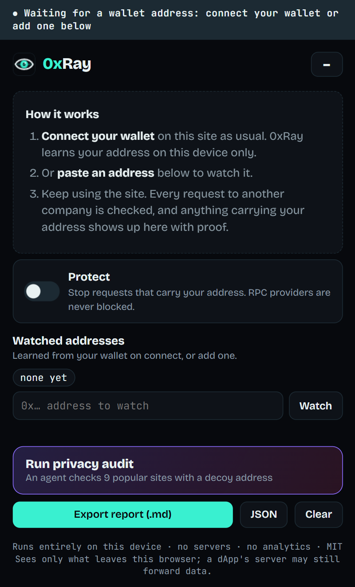
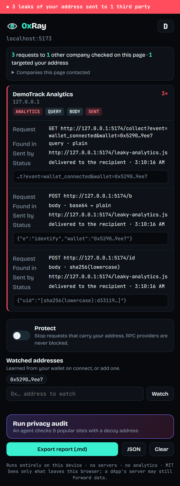
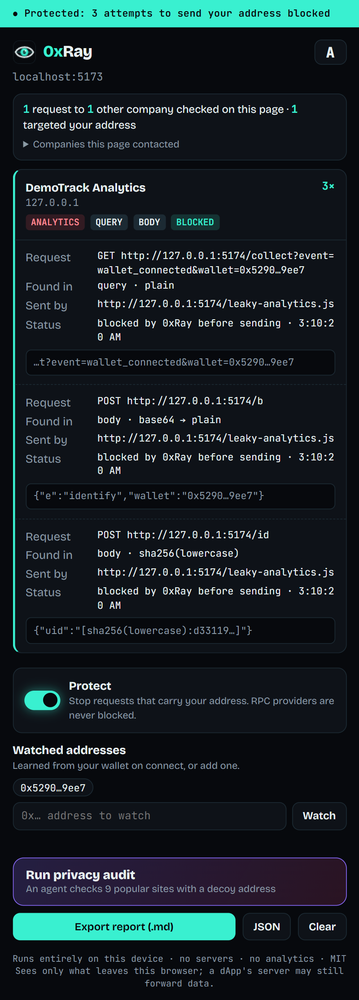

How it works
Your wallet guards your keys. Nothing guards your address.
Once you connect, the website's own code can send your address anywhere: analytics, ad pixels, error trackers. That code runs outside your wallet, so only something that watches the page's traffic can see it. That's 0xRay.
It learns your address. Locally.
When your wallet hands a page your address, 0xRay notices, on your device only. Or paste an address to watch. It precomputes every disguise: checksummed, without 0x, URL-encoded, Base64, and SHA-256, Keccak, SHA-1 and MD5 hashes.

It checks every request. With proof.
Every request to another company is scanned: URL, body, cookies, Referer headers and WebSocket messages. Each finding shows who got it, where it was hidden, how it was encoded, which script sent it, and whether it was actually delivered.

One switch. Blocked.
Turn on Protect and requests carrying your address are stopped before they leave the page, then that recipient is blocked. RPC providers are never blocked, so dApps keep working.

The audit agent
It browses for you, with a decoy.
Press Run audit in the extension. An agent opens popular crypto sites in background tabs, each with a freshly generated decoy address, watches who receives it, closes the tab, and builds a report. You learn which sites would leak your address without ever exposing it.
- ›Generate a random decoy address that belongs to nobody
- ›Open
etherscan.io/address/0xdecoy…in a background tab - ›Watch every outgoing request for 10 seconds
- ›Record recipients, encodings and outcomes; close the tab
- ›Repeat for 9 sites, then show the report
Trust
Built the way a privacy tool should be.
Censorship resistant
No server, domain or account to take away. It runs from the code on your machine.
Open source
MIT licensed. Builds from the repo with one command. Read every line.
Private
Analysis happens on your device; the extension makes no network requests of its own. Saved findings are redacted.
Secure
Never asks for or touches keys or seed phrases. Read-only; blocking is off until you turn it on.
Honest limitations
- It sees what leaves your browser, not what a dApp's server forwards to others later.
- Custom or encrypted encodings can slip through. Only full-length matches count, so findings are evidence, not guesses.
- Requests from web workers, and Blob or stream bodies, are checked at the network layer only and can't be stopped before the first send.
- The audit agent opens real pages in background tabs; those sites see an ordinary visit for a random decoy address.